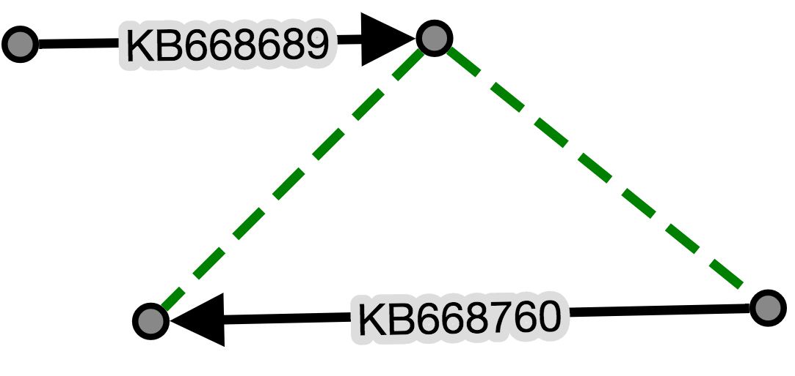
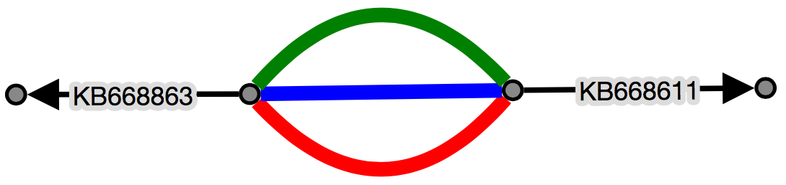

Per assembly overview
| id | name | # APs | orientation (O / SO / U) | nc | OC / OSC | IC / ISC | MAP |
|---|---|---|---|---|---|---|---|
| {{ data.names_to_id[assembly.name] }} | {{ assembly.name }} | {{ assembly.aps|length }} | {{ assembly.oriented_aps_cnt }} / {{ assembly.semi_oriented_aps_cnt }} / {{ assembly.unoriented_ap_cnt }} | {{ assembly.non_conflicted_cnt }} | {{ assembly.out_conflicted_cnt }} / {{ assembly.out_semi_conflicted_cnt }} | {{ assembly.in_conflicted_cnt }} / {{ assembly.in_semi_conflicted_cnt }} | {{ assembly.aps|selectattr("participates_in_max_non_conflicting_assembly")|list|length }} ({{ "%0.2f" | format((assembly.aps|selectattr("participates_in_max_non_conflicting_assembly")|list|length * 100 / assembly.aps|length) | float) }} %) |
| id | name | # APs | orientation (O / SO / U) | nc | OC / OSC | IC / ISC | MAP |
{#
Grouped assemblies comparison
#}Individual assemblies
| ctg1 | ctg2 | or1 | or2 | or | ssc | sc | osc | oc | un | map |
|---|---|---|---|---|---|---|---|---|---|---|
| {{ ap.contig_1 }} | {{ ap.contig_2 }} | {% if ap.participation_ctg1_or is not none %} {{ ap.participation_ctg1_or }}{% else %} {{ ap.contig_1_orientation }}{% endif %} | {% if ap.participation_ctg2_or is not none %} {{ ap.participation_ctg2_or }}{% else %} {{ ap.contig_2_orientation }}{% endif %} | {{ ap.orientation_as_word }} | {% if ap.is_in_semi_conflicted_for(assembly.name) %} 1 {% else %} 0 {% endif %} | {% if ap.is_in_conflicted_for(assembly.name) %} 1 {% else %} 0 {% endif %} | {% if ap.is_out_semi_conflicted_for(assembly.name) %} 1 {% else %} 0 {% endif %} | {% if ap.is_out_conflicted_for(assembly.name) %} 1 {% else %} 0 {% endif %} | {% if ap.sources|length == 1 %} 1 {% else %} 0 {% endif %} | {% if ap.participates_in_max_non_conflicting_assembly %} 1 {% else %} 0 {% endif %} |
| ctg1 | {# contig1#}ctg2 | {# contig2#}or1 | {# contig1 orientation#}or2 | or | {# contig2 orientation#}ssc | {# semi-self-confclited#}sc | {# self-conflicted#}osc | {# outer-semi-confclited#}oc | {# outer-confclited#}un | {# unique to this assembly#}map | {# super assembly participation#}
Assemblies comparison
[{% for assembly in data.assemblies %} {{ assembly.name }}{% if not loop.last %}; {% endif %} {% endfor %}]
| sources | ctg1 | ctg2 | oor1 | oor2 | por1 | por2 | or1 | or2 | cw | or | ssc | sc | osc | oc | map | self_id |
|---|---|---|---|---|---|---|---|---|---|---|---|---|---|---|---|---|
| [{% for source_name in ap.sources|sort %}{{ data.names_to_id[source_name] }}{% if not loop.last %}, {% endif %}{% endfor %}] | {{ ap.contig_1 }} | {{ ap.contig_2 }} | {{ ap.contig_1_orientation }} | {{ ap.contig_2_orientation }} | {{ ap.participation_ctg1_or }} | {{ ap.participation_ctg2_or }} | {% if ap.participates_in_max_non_conflicting_assembly %} {{ ap.participation_ctg1_or }} {% else %} {{ ap.contig_1_orientation }} {% endif %} | {% if ap.participates_in_max_non_conflicting_assembly %} {{ ap.participation_ctg2_or }} {% else %} {{ ap.contig_2_orientation }} {% endif %} | {{ "%0.2f" | format(ap.cw) | float }} | {{ ap.orientation_as_word }} | {% if ap.in_semi_conflicted|length > 0 %}[{% for source_name in ap.in_semi_conflicted|sort(case_sensitive=False) %}{{ data.names_to_id[source_name] }}{% if not loop.last %}, {% endif %}{% endfor %}]{% else %}0 {% endif %} | {% if ap.in_conflicted|length>0 %}[{% for source_name in ap.in_conflicted|sort(case_sensitive=False) %}{{ data.names_to_id[source_name] }}{% if not loop.last %},{% endif %}{% endfor %}]{% else %}0 {% endif %} | {% if ap.out_semi_conflicted|length>0 %}[{% for source_name in ap.out_semi_conflicted|sort(case_sensitive=False) %}{{ data.names_to_id[source_name] }}{% if not loop.last %}, {% endif %}{% endfor %}]{% else %}0{% endif %} | {% if ap.out_conflicted|length>0 %}[{% for source_name in ap.out_conflicted|sort(case_sensitive=False) %}{{ data.names_to_id[source_name] }}{% if not loop.last %}, {% endif %}{% endfor %}]{% else %}0{% endif %} | {{ 1 if ap.participates_in_max_non_conflicting_assembly else 0 }} | {{ ap.self_id }} |
| sources | ctg1 | ctg2 | oor1 | oor2 | por1 | por2 | or1 | or2 | cw | or | ssc | sc | osc | oc | map | self_id |
How to interpret column values
- sources: column represents the list of assemblies, that reported a particular assembly point. Assemblies are referred to by there ids, which in turn can be found in Assemblies summary table, as well as next to each assembly in the Individual assemblies section
- ctg1: column corresponds to first, out of two fragments, that participate in the reported assembly point.
- ctg2: column corresponds to second, out of two fragments, that participate in the reported assembly point
- or1: column corresponds to relative orientation of ctg1 wrt ctg2
in the reported assembly.
- + orientation corresponds to the head of ctg1 being adjacent in the reported assembly
- - orientation corresponds to the tail of ctg1 being adjacent in the reported assembly
- or2: column corresponds to relative orientation of ctg2 wrt ctg1
in the reported assembly.
- + orientation corresponds to the tail of ctg2 being adjacent in the reported assembly
- - orientation corresponds to the head of ctg1 being adjacent in the reported assembly
- cw: confidence weight (score) for the reported assmebly point. Equals to the sum of individual assembly points, reported by each assembly
- or: a flag determining the type os assembly point:
- O: oriented assembly point, that is for both fragments their extremities are specified
- SO: partially oriented assembly point, that is only for one out of two fragments an assembly extremity is specified
- U: unoriented assembly point, that is for both fragments their extremities used for assembly are not specified
- ssc: corresponds to the list of sources, with which this assembly point is
Self-Semi-Conflicted. This happens, if this assembly point (at
least one of its representations , if the point was reported ambiguous)
in the super assembly conflicts with some other assembly point (at least one of its representations) from same
sourcee. At least one of two points taken part in this conflict had to be reported ambiguous.
0 stands for non Self-Semi-Conflicted. - sc: corresponds to the list of sources, with which this assembly point is
Self-Conflicted. This happens, if this assembly point (regardless of the
representations) in the super assembly,
conflicts with some other assembly point (regardless of its representation) from the same source (which source is
specified in the list).
0 stands for non self-Conflicted. - osc: corresponds to the list of sources, with which this assembly point is
Oout-Semi-Conflicted. This happens, if this assembly point (at
least one of its representations , if the point was reported ambiguous)
in the super assembly conflicts with some other assembly point (at least one of its representation) from the
different source. At least one of two points taken part in this conflict had to be reported ambiguous.
0 stands for non Out-Semi-Conflicted. - oc: corresponds to the list of sources, with which this assembly point is
Out-Conflicted. This happens, if this assembly point (regardless of its
representation) in the super assembly,
conflicts with some other assembly point (regardless of its representation) from the different source.
0 stands for non Out-Conflicted. - map: is a boolean flag (i.e. aither 0 or 1) corresponding whether this assmbely point participates in the reported Merged-Assembly
How to filter and order information in the table
- Built-in filters: every column has a filter in the table heading.
- If the filter is represented an input field, the value a substring of a column / row entry. Smart Datatables search is used.
- If the input is represented with a dropdown, then all values matching the chose value will be kept.
- There is a whole table filter on the top right of the table. It also accepts a string expression, but for this filter at least one value in at least one column has to at least to contain the specified string.
- Advanced filtering: There is a collapsible panel with advance filtering capabilities. Please refer to instructions in it.
Filter the table and draw the first graph
Reading the graph
Colors
{% for assembly in data.assemblies %}
{# #}
{{ assembly.name }}
{% endfor %}
Edges
- Contig edge: is a directed black edge with contig name written on it. Represents the contig,
participating in one or more assembly points. Direction of the edge corresponds to respective contig orientation.
Example:

- Assembly edge: colored (based on the source) non-directed edge corresponds to the reported assembly
point.
- Non-ambiguous:
all assembly edges from ambiguous assembly points are shown as dashed.
Example:

- Ambiguous:
all assembly edges from non-ambiguous assembly points are shown as solid.
Example:
Example:
Parallel edges correspond to assembly points, reported by respective list of sources, where such list can be determined by the color of parallel edges.Example:
 - Non-ambiguous:
all assembly edges from ambiguous assembly points are shown as dashed.
Modifying the graph
One can work with thr graph, using the mouse / touchpad.- Zooming: using the scroll of the mouse, one can zoom in and out of the graph. Note that the position of the pointer determines where the zoom will be focused.
- Moving: use the standard drag operation to move the graph
- Fitting: to fit the whole drawn graph in the frame, use the Fit button at the top of the picture
Saving graph image
Using the Save button on the top of the graph image itself, one can save the current view of the graph as a png picture.{# #}